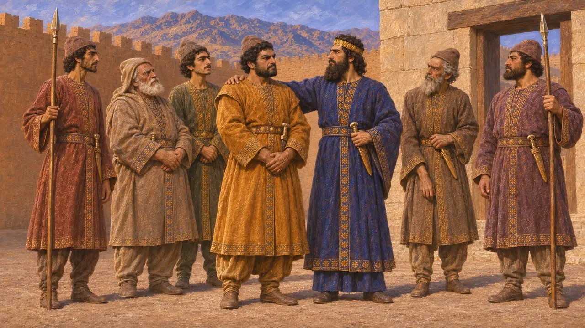
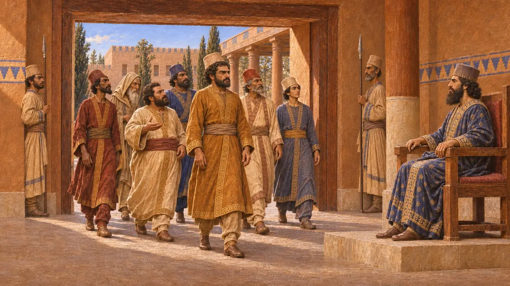
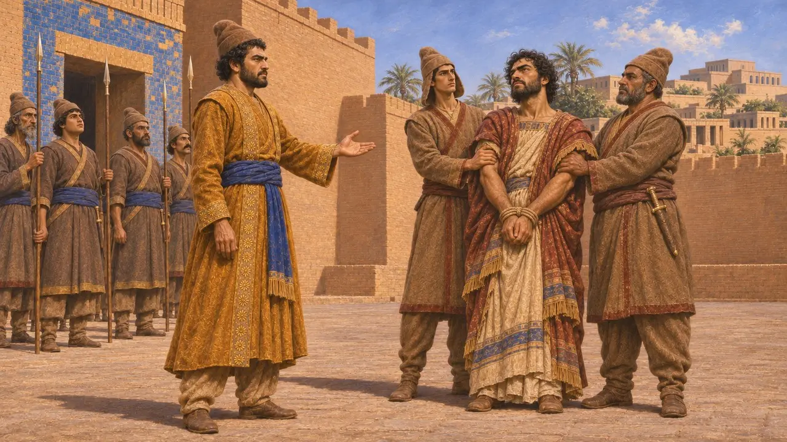
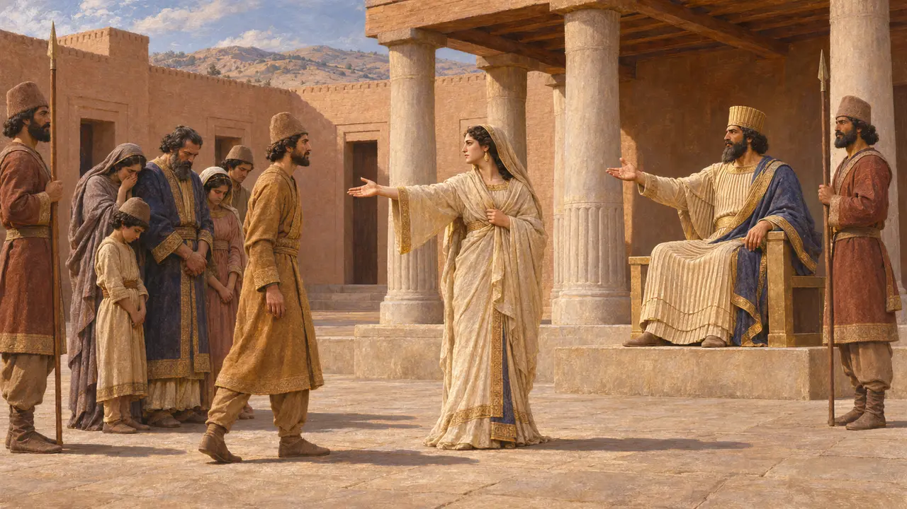

Intafernes (Vindafarna)
Nobre persa e general de Dario, um dos sete conspiradores, 522-521 AEC
No jogo: Nível 3: A Mentira
Vindafarna, chamado de Intafrenes por Heródoto, foi um nobre persa que esteve ao lado de Dario quando Gaumata foi morto, em 522 AEC. A inscrição de Behistun, de Dario, o nomeia como conspirador e como o general que derrotou o segundo rebelde babilônio, Arakha. Heródoto lhe dá um fim diferente, uma história de prisão no palácio.
No jogo: Vindafarna é citado nos artigos da Enciclopédia sobre a revolta de Arakha e a morte de Gaumata. Ele não tem mecânica própria. O jogo lhe atribui a retomada da Babilônia e a captura de Arakha, o que segue Behistun quanto à segunda revolta.

Um dos sete
Nos registrosA inscrição de Behistun lista os homens que ajudaram Dario a matar Gaumata e nomeia entre eles Vindafarna, filho de Vayaspara, um persa. Dario apresenta a lista como parte de seu próprio relato de como tomou o trono. Ele também ordena aos reis futuros que protejam as famílias desses homens.
DB §68

Heródoto sobre os sete
Relato antigoHeródoto o chama de Intafernes e o conta entre os sete persas que conspiraram contra o falso Esmérdis e o mataram. Diz também que os sete receberam o direito de entrar na presença do rei sem serem anunciados, exceto quando o rei estava com uma mulher.
Herodotus 3.70, 3.84

O general contra Arakha
Nos registrosDario diz que Arakha, um homem de ascendência armênia, se rebelou na Babilônia uma segunda vez, afirmando ser Nabucodonosor. Vindafarna, um persa, é nomeado como o comandante que o derrotou ali e o fez prender. O próprio Dario liderou o exército contra o primeiro rebelde babilônio, Nidintu-Bel, de modo que a Babilônia não foi retomada por um único general.
DB §§49-50

A queda de Intafernes em Heródoto
Relato antigoHeródoto conta que Intafernes teve a entrada no palácio recusada e mutilou os mensageiros reais que o detiveram. Dario mandou prendê-lo, junto com sua família, e condenou-os. O rei poupou um único homem, escolhido pela esposa de Intafernes, e ela escolheu o irmão. A história se lê como um conto moral sobre a justiça de um rei, e nenhuma fonte persa a confirma.
Herodotus 3.118-119
Fontes
- Behistun inscription, DB §§49-50, §68
- Herodotus 3.70, 3.84, 3.118-119
- P. Briant, From Cyrus to Alexander, 2002